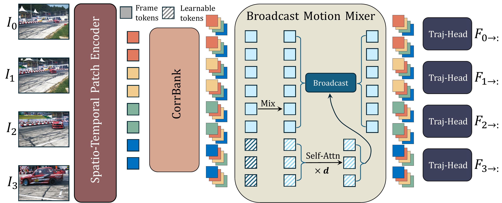
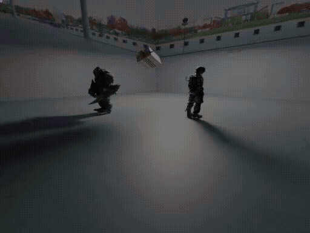
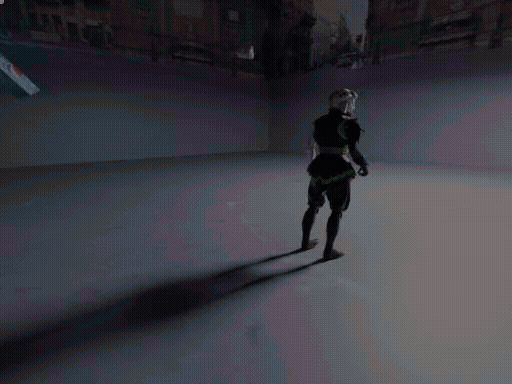

Visualization Results

Tracking-any-point (TAP) answers query-conditioned correspondence but leaves the dense, all-pairs structure of a video implicit. We formulate All-Pairs Tracking (APT): given a video, predict dense displacement and visibility for every source-target frame pair, from which per-pixel trajectories can be read out. To this end, we propose PairFormer, a feed-forward transformer that addresses APT in a single pass. A spatio-temporal patch encoder computes temporally conditioned features for all frames. CorrBank constructs a learnable correlation memory for each frame pair to obtain pairwise motion tokens. A broadcast motion mixer aggregates information across space and time and refines these tokens with global context. A trajectory head then predicts full-resolution displacement for each pair, yielding a coherent all-pairs trajectory field. To support APT at scale, we develop PAIRender, a data platform that synthesizes photo-realistic dynamic scenes with dense annotations. From PAIRender we derive a training set (π-R10K) and a benchmark (APT-Bench) with an all-to-all evaluation protocol. Experiments show that PairFormer achieves strong performance on APT-Bench and competitive results on standard TAP benchmarks. Code and dataset will be released upon publication.

PairFormer architecture for All-Pairs Tracking (APT). Given a video, the Spatio-Temporal Patch Encoder maps all frames to temporally conditioned patch features on a regular grid. CorrBank performs memory-augmented matching to produce pairwise motion tokens. The Broadcast Motion Mixer applies trajectory-wise mixing, followed by per-frame and all-frames context aggregation and a broadcast step that conditions each motion token on global context. Finally, the Trajectory Field Decoder (Traj-Head) applies a DPT style head to each pair and outputs full-resolution displacement. Fs→: denotes displacement field from frame s to all other frames.
We report results on public point-tracking datasets spanning varied domains: BADJA (animals), CroHD (surveillance), TAPVid-DAVIS (YouTube-like), DriveTrack (driving), EgoPoints (egocentric), TAPVid-Kinetics (YouTube), RGB-Stacking (robotic manipulation), and RoboTAP (robotics).
For long videos we cap the length to at most 600 frames for tractability, and follow the official TAP-Vid protocol for sampling query trajectories and visibility labels.
| Method | Bad | Cro | Dav | Dri | Ego | Kin | RGB | Rob | Avg. |
|---|---|---|---|---|---|---|---|---|---|
| RAFT | 23.7 | 29.3 | 48.5 | 44.8 | 41.0 | 64.3 | 82.8 | 72.2 | 50.8 |
| SEA-RAFT | 23.9 | 21.9 | 48.7 | 49.4 | 44.0 | 64.3 | 85.7 | 67.6 | 50.7 |
| AccFlow | 10.3 | 22.2 | 23.5 | 26.4 | 4.0 | 38.8 | 63.2 | 57.9 | 30.8 |
| PIPs++ | 34.1 | 27.5 | 62.5 | 51.3 | 38.5 | 64.2 | 70.4 | 73.4 | 52.7 |
| LocoTrack | 41.4 | 43.1 | 68.0 | 66.5 | 58.4 | 70.0 | 80.3 | 76.9 | 63.1 |
| BootsTAPIR | 42.7 | 34.9 | 67.9 | 66.9 | 56.8 | 70.6 | 81.0 | 78.2 | 62.4 |
| DELTA | 44.6 | 42.9 | 75.3 | 67.8 | 40.3 | 66.5 | 83.0 | 74.8 | 61.9 |
| CoTracker2 | 40.0 | 31.7 | 70.9 | 67.8 | 43.2 | 65.8 | 73.4 | 73.0 | 58.2 |
| CoTracker3 | 48.3 | 44.5 | 77.1 | 69.8 | 60.4 | 71.8 | 84.2 | 81.6 | 67.2 |
| PairFormer | 49.7 | 44.1 | 75.8 | 66.9 | 63.2 | 72.1 | 89.1 | 83.8 | 68.1 |
For evaluating APT, we utilize three datasets with dense pairwise annotations: CVO, CVO-Extended, and APT-Bench. The dense scenario can be formulated as densely sampled query points and their corresponding trajectories, thus enabling the direct adoption of metrics designed for TAP-style benchmarks.
| CVO | CVO-Ext | APT-Bench | |||||||||||||||
|---|---|---|---|---|---|---|---|---|---|---|---|---|---|---|---|---|---|
| Method | δavg ↑ | EPE ↓ | AJ ↑ | Δ1epe ↓ | Δ5epe ↓ | δavg ↑ | EPE ↓ | AJ ↑ | Δ1epe ↓ | Δ5epe ↓ | Δ25epe ↓ | δavg ↑ | EPE ↓ | AJ ↑ | Δ1epe ↓ | Δ5epe ↓ | Δ25epe ↓ |
| CoTracker3_Offline | 78.9 | 1.53 | 75.5 | 1.23 | 1.63 | 71.5 | 5.30 | 70.4 | 3.66 | 5.59 | 8.95 | 75.2 | 4.25 | 72.5 | 2.47 | 4.18 | 6.48 |
| CoTracker3_Online | 77.2 | 1.55 | 74.3 | 1.27 | 1.71 | 70.8 | 5.35 | 69.2 | 3.79 | 5.82 | 9.21 | 73.9 | 4.31 | 73.2 | 2.59 | 4.32 | 6.73 |
| DOT | 81.2 | 1.40 | 79.8 | 1.12 | 1.39 | 72.7 | 5.28 | 70.8 | 3.52 | 5.38 | 8.77 | 76.7 | 3.68 | 75.4 | 2.18 | 3.69 | 6.02 |
| PairFormer | 81.8 | 1.32 | 80.3 | 1.04 | 1.31 | 73.2 | 5.13 | 71.2 | 3.34 | 5.09 | 8.26 | 77.5 | 3.26 | 76.3 | 2.03 | 3.21 | 5.39 |
We benchmark average per-frame-pair inference time on the APT task on the first 10 frames of APT-Bench at 512×512 resolution, batch size = 1, FP16 on a single NVIDIA A100-40G GPU.
Sparse TAP trackers (TAPIR/CoTracker3) are densified with the same protocol as in the main paper so they produce an all-pairs field; timings include this densification. Two-frame flow models (RAFT) run per pair directly. PairFormer produces dense all-pairs outputs in one pass, avoiding multi-hop propagation.
| Method | Time (s) |
|---|---|
| RAFT | 0.11 |
| AccFlow | 0.13 |
| TAPIR | 9.27 |
| CoTracker3_Offline | 6.13 |
| DOT (N=2048) | 0.27 |
| DOT (N=4096) | 0.55 |
| PairFormer (ours) | 0.11 |


@inproceedings{wu2026pairformer,
title={Matching Every Pair to Track Every Point: PairFormer for All-Pairs Tracking and Video Trajectory Fields},
author={Guangyang Wu and Youran Ding and Xinyu Che and Benyuan Sun and Yi Yang and Xiaohong Liu},
booktitle={Proceedings of the IEEE/CVF Conference on Computer Vision and Pattern Recognition (CVPR)},
year={2026}
}